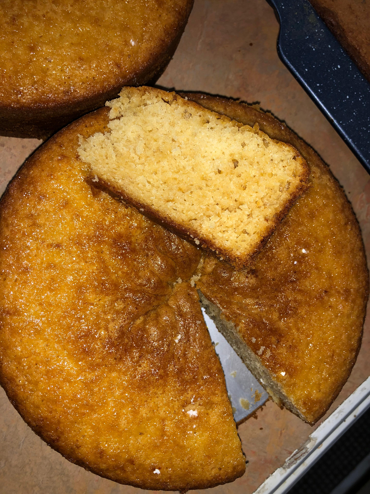

Home
Sponge Cake Recipe

Description
This sponge cake is light, airy, moist and delicious.
A family recipe that has been passed on through generations.
Ingredients
- 8oz Blue Band Margarine Softened
- 2 Cups Granulated Sugar
- 4 Eggs
- 2-3 tsps Vanilla Essence
- 3 Cups Sifted Flour
- 6 tsps Baking Powder
- 2 Cups Green Butterfly Evaporated Milk
Steps
- Preheat oven to 350 degrees.
- Cream sugar and butter until light and fluffy.
- Whisk eggs with vanilla essence until light.
- Add egg mixture to butter mixture, and beat in well.
- Add flour and baking powder to mixture, and beat until completely mixed.
- Gently beat in milk until fully combined.
- Pour into two, 9-inch greased and floured cake tins.
- Bake at 350 degrees in preheated oven for 40-45 minutes.
- Test with toothpick inserted in center of cake, making sure toothpick comes put clean - which means cake is properly baked.
- Place on cooling racks and leave to cool.